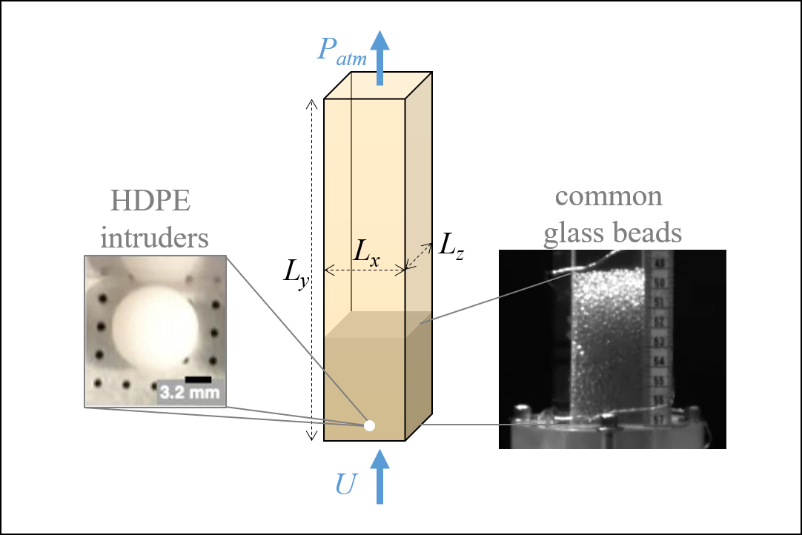

Problem Description
{kind=link}
Geometry
\(L_x = 38.09 \pm 0.02\) (mm)
\(L_y = 228.6\) (mm)
\(L_z = 38.11 \pm 0.02\) (mm)
Bed mass
\(M = 177.46 \pm 0.01\) (g)
\(M = 227.47 \pm 0.01\) (g)
Inflow superficial velocity
\(U = 1.83\) (m/s)
\(U = 1.99\) (m/s)
\(U = 2.13\) (m/s)
Outflow conditions
\(P_{atm} = 83.77\) (kPa)
\(T_{atm} = 293.15\) (K)
Notes
To clarify, there is only one bed mass and gas flow rate for a given run. The set of experimental conditions for which data was collected and reported is listed in Measurements.
The three flow conditions were set by flow meter readings of 3.6, 3.8 and 4.0 (SCFM) with back pressures of 12.5, 14 and 15 (psig), respectively. See Appendix: flowrate calculation for a discussion on the calculation of \(U\) and its uncertainty.
The distributor is a one-eighth inch thick disk, perforated 0.9 mm holes in a square grid with an edge size of 3.2 mm.
The uncertainty in the atmospheric temperature is estimated to be approximately 5 (K). The uncertainty in the atmospheric pressure unknown.